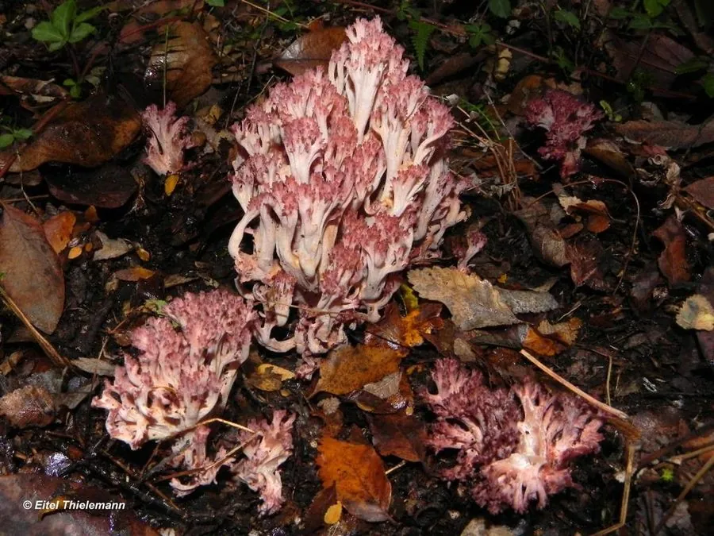

真菌 · 真菌界
葡萄状枝瑚菌 Ramaria botrytis

枝瑚菌科食用菌，子实体乳白至淡黄、分枝顶端带紫红色，形如花菜，秋季生于阔叶林地上，须煮熟食用。
- 分类
- 门担子菌门纲伞菌纲目钉菇目科枝瑚菌科属枝瑚菌属
- 栖息环境
- 阔叶林地上，与栎类等形成外生菌根，秋季发生
- 地理分布
- 北半球温带阔叶林分布，中国华东、西南及欧洲、北美有记录
- 保护级别
- 暂无评估；老龄阔叶林减少使种群受胁
物种志
葡萄状枝瑚菌的子实体高 8–20 厘米，宽 8–15 厘米，基部粗壮，向上多次分枝，形似花菜或珊瑚，分枝乳白至淡黄色，顶端密集并带紫红、粉红色，是其显著特征。菌肉白色，脆嫩。孢子印淡黄褐色，孢子长椭圆形，有纵纹。
葡萄状枝瑚菌生于栎、山毛榉等阔叶林地上，与树木形成外生菌根，秋季 8–10 月发生，喜温暖湿润、排水良好的土壤。它是枝瑚菌属中最著名的食用种之一，肉质脆嫩、风味清淡，可炒食或做汤，但必须煮熟，且不宜一次大量食用。采食时要与顶端同样带红的有毒种类区分，并避免采摘生于污染土壤或公路边的个体，因为珊瑚菌易富集重金属。
形态与习性
- 子实体高 8–20 厘米，花菜状，分枝顶端紫红
- 菌肉白色脆嫩，风味清淡
- 孢子印淡黄褐色，孢子有纵纹
- 生境阔叶林地上，秋季 8–10 月发生
- 食用性著名食用珊瑚菌，须煮熟，不宜大量食用
- 注意易富集重金属，勿采公路边与污染地个体
趣味知识
- 它最易识别的特征是分枝顶端那一抹紫红色，像撒了葡萄霜。
- 葡萄状枝瑚菌是珊瑚菌中口碑最好的食用种之一，口感脆嫩似笋。
- 珊瑚菌类容易富集重金属，生长在公路边或矿区附近的个体不宜食用。
- 它必须与树木共生，人工栽培至今未能突破。